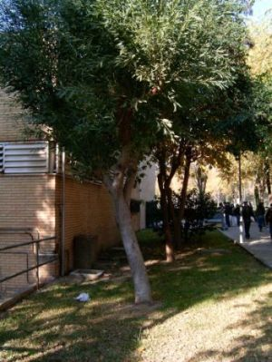
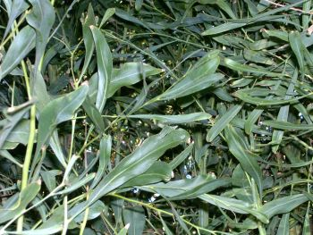

Flora
ornamental
del
Campus de Reina Mercedes,
Universidad
de Sevilla - Ficha nº 53 - Versión 2*
|
Acacia pycnantha Benth. in |
|
|
Acacia |
Árbol
perennifolio |
|
Hojas sin estípulas,
reducidas a filodios de 6-20 x 0,5-
Inflorescencias en glomérulos capituliformes
de 8- Flores pentámeras
de un amarillo dorado; cáliz de 1- Fruto elipsoideo
de 3-13 x 6,5- |
 Foto: Irene Tellería, 2006 Este ejemplar, único de su especie en el Campus, fue talado en 2007 para ampliar los contenedores de residuos. |
|
 |
Observaciones:
El nombre genérico procede del griego
ákakia debido a las espinas que
poseen varias de las especies. En griego, akis
significa punta,
aguijón.
Al género
Acacia pertenecen
unas 1.200
especies, unas tienen hojas adultas bipinnadas y
otras las tienen
reducidas al pecíolo ensanchado (filodio) que
adquiere el aspecto Aparece
en la bandera de
Australia. |
|
Área
de origen.- Sureste
de Australia (2). |
|
|
Uso en
el campus: un único ejemplar
como
árbol ornamental. |
Localización: Zona central del Campus: |
|
(1) (2) |
|
|
©
Irene Telleria
Domínguez & Carlos Romero Zarco, 2006 -
Revisada en 2008 |
|